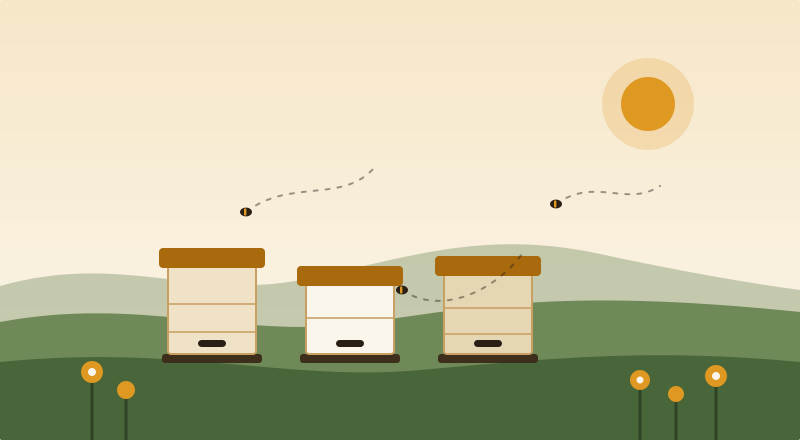

Über uns
Ein Verein, der älter ist als die Autobahn hier.
Seit 1964 gibt es den Imkerverein Beispielhausen. Geblieben sind die Waben, geändert haben sich die Werkzeuge, die Krankheiten und das Durchschnittsalter.
Woher wir kommen
Gegründet wurde der Verein von elf Landwirten, die ihre Obstwiesen bestäubt haben wollten. Heute sind die Obstwiesen weitgehend weg, die Bienen aber nicht – sie stehen in Gärten, auf Garagendächern und am Rand von drei Blühstreifen, die wir selbst angelegt haben.
Was den Verein zusammenhält, ist weniger die Satzung als die Schleuder: ein Gerät, das sich niemand allein kaufen würde, und das deshalb alle teilen.
- 1964
Gründung durch elf Obstbauern, 34 Völker. Erster Vorsitzender ist der Dorfschullehrer, weil er als Einziger eine Schreibmaschine hat.
- 1978
Der Verein kauft die erste Honigschleuder aus Edelstahl. Sie läuft bis heute, inzwischen mit Motor.
- 1996
Die Varroamilbe erreicht den Landkreis. Innerhalb von zwei Jahren halbiert sich die Zahl der Völker im Verein.
- 2014
Der Lehrbienenstand am Mühlenweg wird eröffnet, finanziert aus Honigverkauf und einem Zuschuss der Gemeinde.
- 2023
Erstmals mehr als 80 Mitglieder, ein Drittel davon unter 40. Der Jahreskurs ist seit drei Jahren ausgebucht.
Der Verein in Zahlen
- Mitglieder
- 87
- Davon unter 40
- 31
- Bienenvölker
- 240
- Blühfläche
- 1,4 ha
Der Lehrbienenstand
Zwölf Vereinsvölker am Südhang hinter dem Sportplatz, zwei davon in einem Schaukasten mit Glasscheibe. Dort kann man eine Wabe eine halbe Stunde lang ansehen, ohne dass jemand nervös wird – weder Biene noch Mensch.
Der Stand ist unser Klassenzimmer. Hier läuft der Jahreskurs, hier werden Schulklassen durchgeführt, und hier steht die Schleuder, die alle Mitglieder nutzen können.
- Adresse
- Mühlenweg 8, 12345 Beispielhausen
- April bis September
- samstags 10–13 Uhr, ohne Anmeldung
- Oktober bis März
- nach Absprache, meist sonntags
- Mitbringen
- lange Hose, geschlossene Schuhe – Schleier gibt es vor Ort

Blühflächen und ein bisschen Streit
Wir pflegen 1,4 Hektar Blühstreifen an vier Feldrändern, gemeinsam mit der Gemeinde und zwei Landwirten. Gemäht wird spät, abschnittweise und nie alles auf einmal. Im August sieht das aus wie eine vergessene Baustelle.
Genau das ist der Punkt: Was im Herbst stehen bleibt, ist Winterquartier für Wildbienen, Schwebfliegen und Raupen. Ein kurz gemähter Streifen ist im September hübsch und im Februar leer.
Zur Ehrlichkeit gehört: Honigbienen sind Nutztiere, keine bedrohte Art. Wo sehr viele Völker stehen, nehmen sie Wildbienen Nahrung weg. Deshalb begrenzen wir die Zahl der Völker am Lehrstand und pflanzen lieber, als zusätzlich aufzustellen.
Wer dem Naturschutz helfen will, ohne zu imkern: Blühstreifen patenschaftlich übernehmen, Totholz liegen lassen, später mähen. Dafür braucht man keinen Verein – aber mit einem ist es netter.
Vorstand
Gewählt auf der Jahresversammlung 2025, Amtszeit drei Jahre. Alle Ämter sind unbezahlt.
-
1. Vorsitzende
Hannelore Weber
Imkert seit 1991, Ansprechpartnerin für Mitgliedschaft und Presse.
-
2. Vorsitzender
Tarek Osman
Leitet den Jahreskurs und den Lehrbienenstand.
-
Kassenwart
Ingrid Baumgartner
Beiträge, Zuschüsse, Abrechnung des Honigverkaufs.
-
Schriftführung
Jonas Reinelt
Protokolle, Termine, diese Webseite.
Beiträge und Satzung
Der Beitrag wird einmal jährlich im Februar eingezogen. Er deckt die Haftpflicht- und Völkerversicherung über den Landesverband, die Fachzeitschrift und den Unterhalt des Lehrbienenstands.
Die Satzung in der Fassung vom 11. März 2023 liegt im Vereinsheim aus und kann per Mail angefordert werden.
| Mitgliedschaft | Enthalten | Pro Jahr |
|---|---|---|
| Vollmitglied | Versicherung, Schleuder, Zeitschrift | 48,00 € |
| Unter 27 Jahren | wie Vollmitglied | 24,00 € |
| Fördermitglied | Einladungen, Jahresbericht | 20,00 € |
| Bienenpatenschaft | 2 kg Honig, Standbesuch | 90,00 € |
Noch unentschlossen?
Komm an einem Samstag zum Lehrbienenstand oder schreib uns eine Zeile. Niemand wird zum Eintritt überredet – dafür haben wir zu viel zu tun.